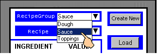
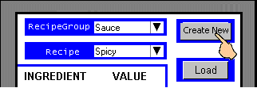
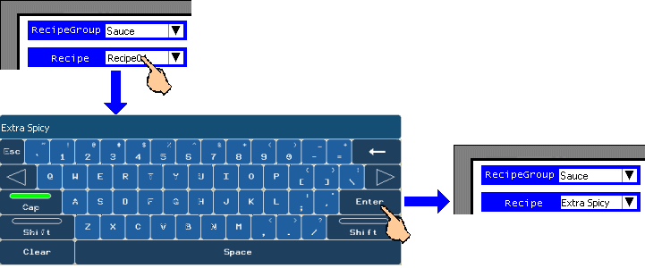
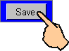

|
|
|
|
|
|
|
|
The Create New Recipe part allows you to create new recipes during Runtime. The Create New Recipe part can work with other parts, such as the Recipe Manager and Recipe Selection parts. The following procedure shows a sample of how to create a new recipe in a Recipe Manager setup during Runtime.
Select the Recipe Group that you want to create the recipe for.

Select the recipe whose ingredient values you want copied to the new recipe.

Click Create New. A new recipe will be created and displayed in the Recipe list box.

Change the name of the new recipe from its default name to something more meaningful to your project.
You can only change the name of the new recipe if you had set the RecipeNameEditable property for the Recipe Manager part to True. If the RecipeNameEditable property had been set to True, click the new recipe name in the Recipe list box to display the keypad and enter the new recipe name.

Touch the Save button to save the new recipe name.

Set the values for the new recipe. For more information, see Section 17.6.3, Changing Recipe Data on the Target Machine.

The ingredient values for the new recipe will either clear or retain the current recipe ingredients and values, depending on the setting defined in the ClearIngredientValues property for the Create New part in the Editor. When the property is set to True, all ingredient values for the new recipe will be cleared. When set to False, all ingredient values are copied over from the selected recipe.